Solar scientific scale and camera controls Draft PR88. Actual Docker preview captures with the real ephemeris API. All images retain original bytes. Physical-scale direction supersedes enlarged concept globes; minimum-size point symbols are position markers, not resolved disks. Effects and statistical belt are off by default. Technical checks do not grant owner visual acceptance.
Source and image SHA256 manifest · Working application
Exact approved originals Exact approved original solar-primary-cinematic.png · SHA256 045227411f54 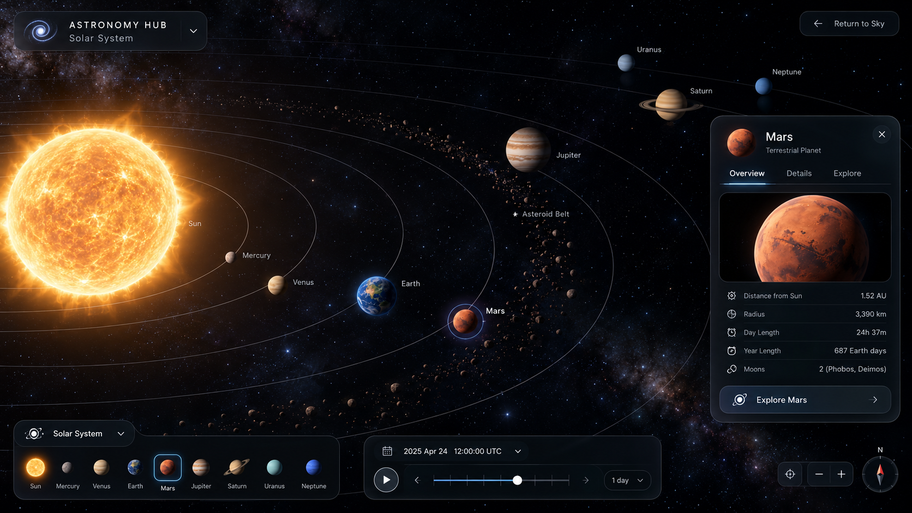
Exact approved original solar-adaptive-explorer.png · SHA256 c9a5bfdf05b6 1440x900 actual browser 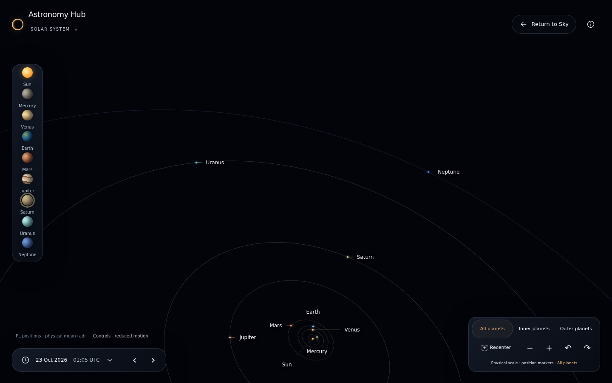
Actual 1440x900 full · source UTC 2026-10-23T01:05:00.123Z · SHA256 4a103511c5b0 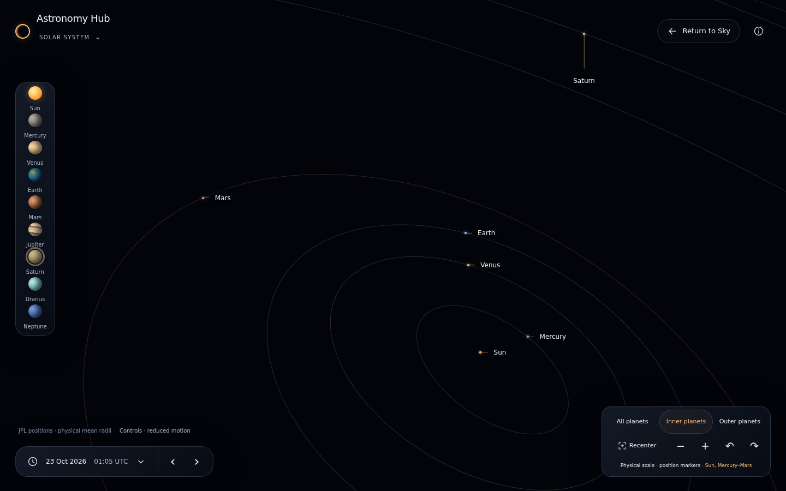
Actual 1440x900 inner · source UTC 2026-10-23T01:05:00.123Z · SHA256 2af8e4e7c6d6 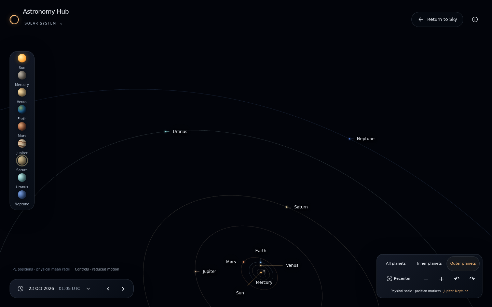
Actual 1440x900 outer · source UTC 2026-10-23T01:05:00.123Z · SHA256 cf3c170233a6 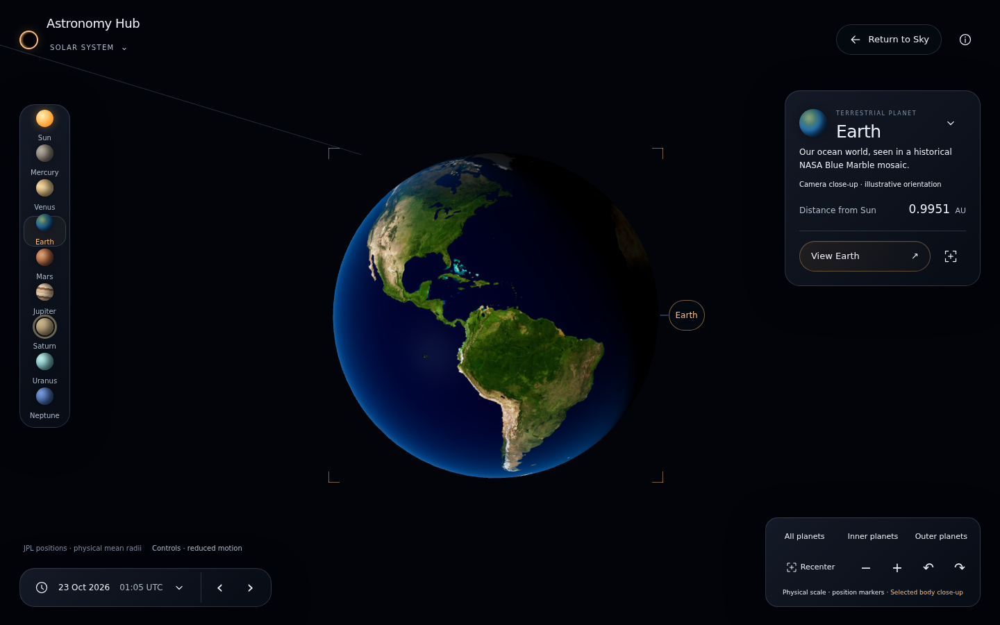
Actual 1440x900 earth · source UTC 2026-10-23T01:05:00.123Z · SHA256 42f2ca4e676e 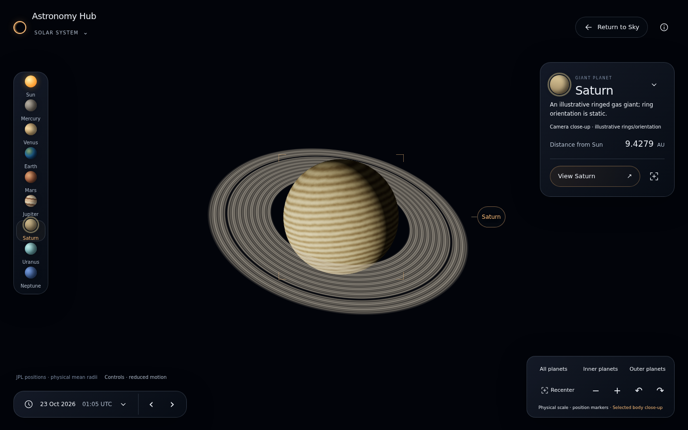
Actual 1440x900 saturn · source UTC 2026-10-23T01:05:00.123Z · SHA256 f3b6971f6fef 390x900 actual browser 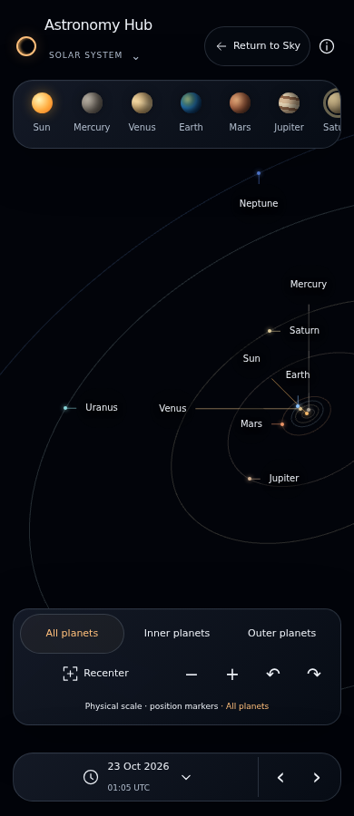
Actual 390x900 full · source UTC 2026-10-23T01:05:00.123Z · SHA256 bf51bb63fc30 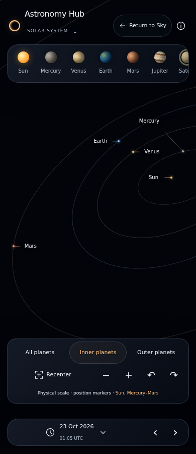
Actual 390x900 inner · source UTC 2026-10-23T01:05:00.123Z · SHA256 4d4e6e7e613f 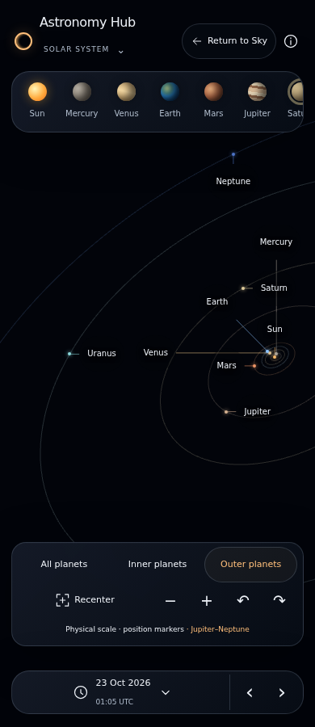
Actual 390x900 outer · source UTC 2026-10-23T01:05:00.123Z · SHA256 b627613e0ce1 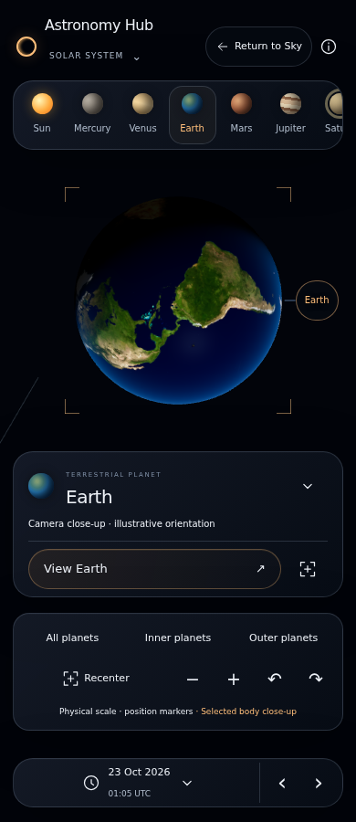
Actual 390x900 earth · source UTC 2026-10-23T01:05:00.123Z · SHA256 5f7ffe259bd1 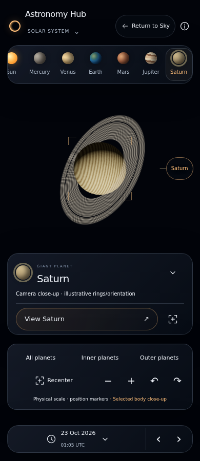
Actual 390x900 saturn · source UTC 2026-10-23T01:05:00.123Z · SHA256 d21fcfe7fc0d 540x390 actual browser 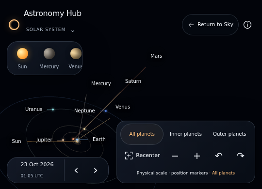
Actual 540x390 full · source UTC 2026-10-23T01:05:00.123Z · SHA256 acd387982ea9 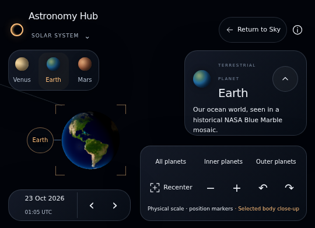
Actual 540x390 earth-expanded · source UTC 2026-10-23T01:05:00.123Z · SHA256 0770b16ff50b 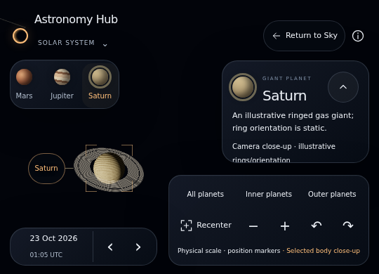
Actual 540x390 saturn-expanded · source UTC 2026-10-23T01:05:00.123Z · SHA256 2f01b6a82a28 320x568 actual browser 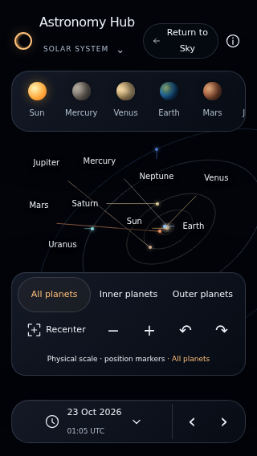
Actual 320x568 full · source UTC 2026-10-23T01:05:00.123Z · SHA256 f1b3ad54af85 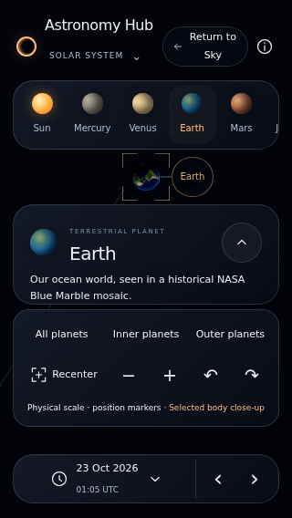
Actual 320x568 earth-expanded · source UTC 2026-10-23T01:05:00.123Z · SHA256 7a9230e4f16e 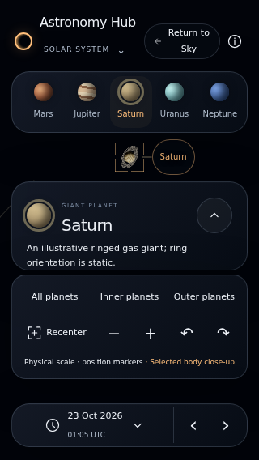
Actual 320x568 saturn-expanded · source UTC 2026-10-23T01:05:00.123Z · SHA256 cb0f13af81cd